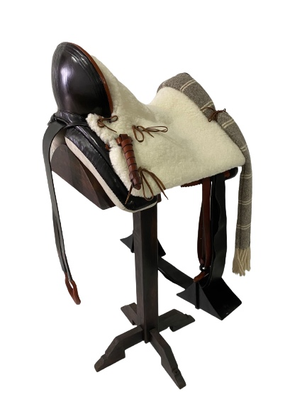
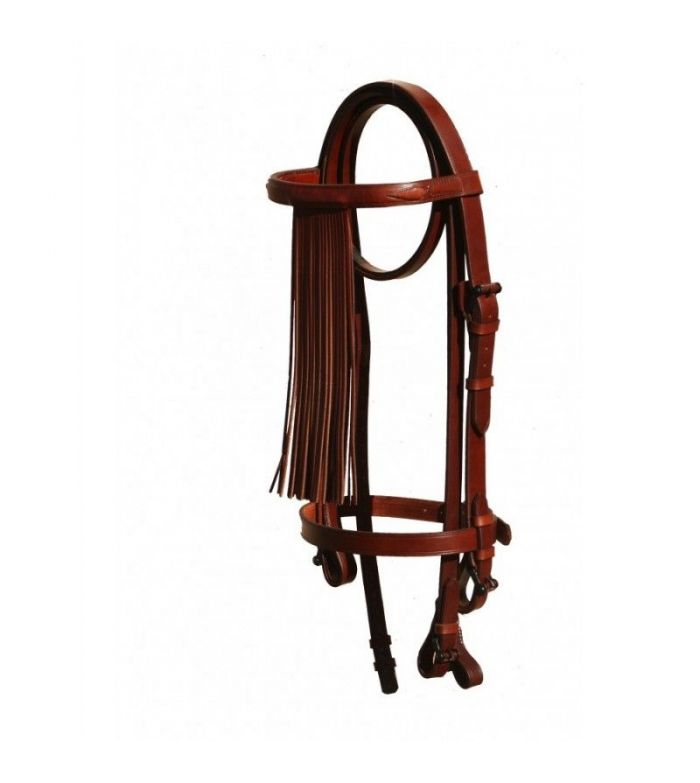
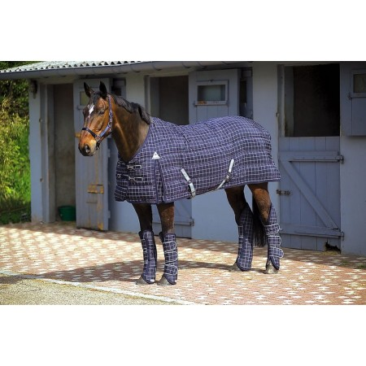

Monturas
Nosotros ofrecemos una gran variedad de tipos de montura vaqueras, inglesas, españolas... y tambien de distintos materiales dependiendo para lo que se use y del presupuesto del cliente. Tambien realizamos monturas a medida, totalmente al gusto del cliente. Hacemos monturas tanto como para principiates y para los mas pequeños tanto como para los mas mayores y los mas profesionales

Cabezales
El cabezal, otro elemento principal a la hora de montar a caballo, en nuestra tienda solo disponemos del modelo vaquero y del modelo ingles, pero encarganoslo y te lo hacemos a tu gusto.

Complementos
Disponemos de todos los tipos de complementos sobre el caballo, de cuadra, de entrenamiento de competicion, como por ejemplo los calentadores, cabezones , mantas.... Aqui vamos a ver un caballo modelo con alguno de nuestros complementos
